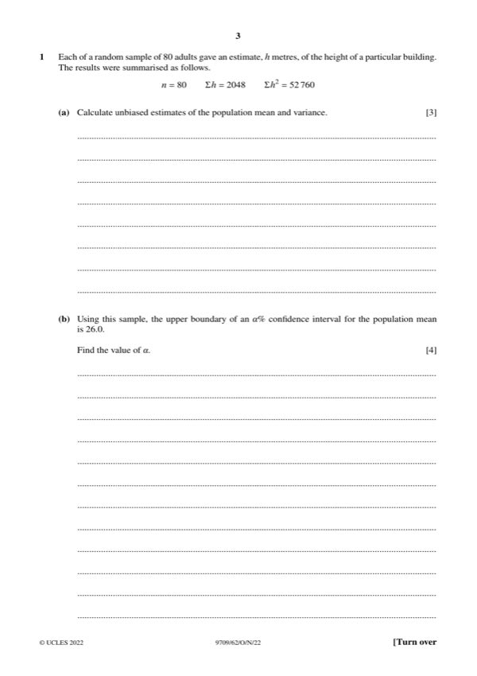
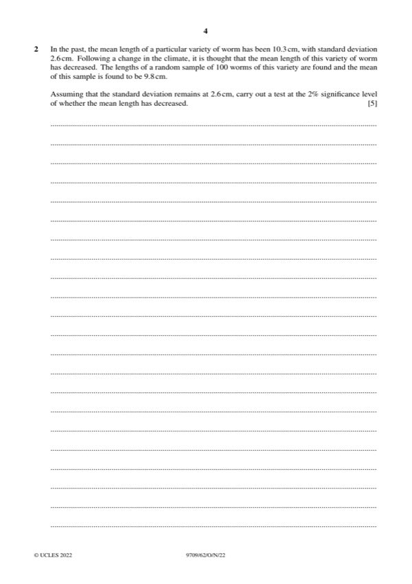
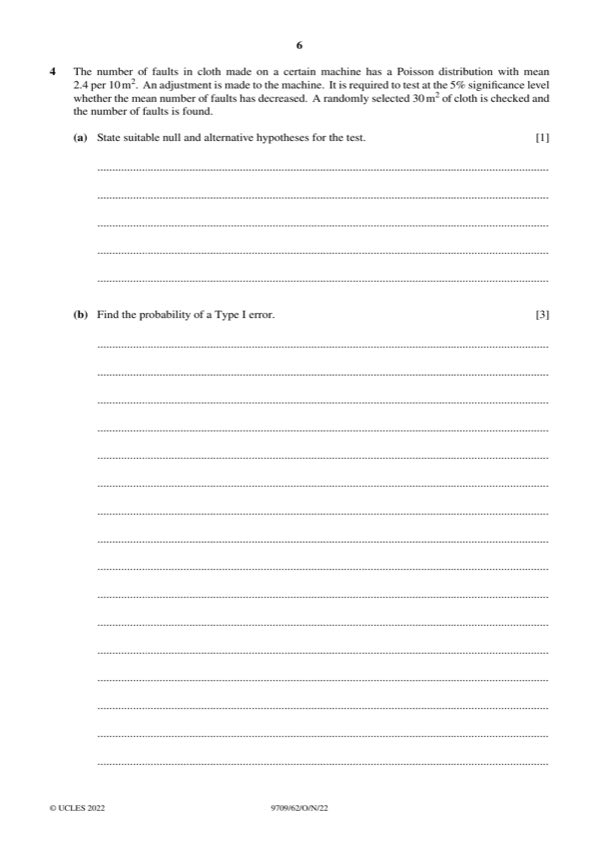
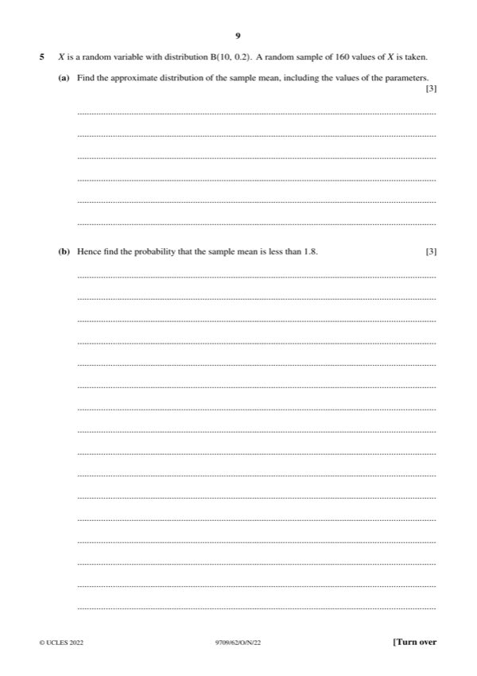
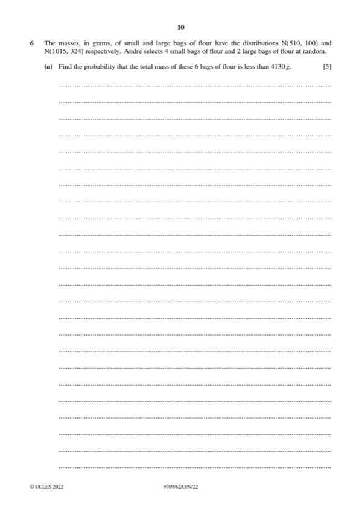
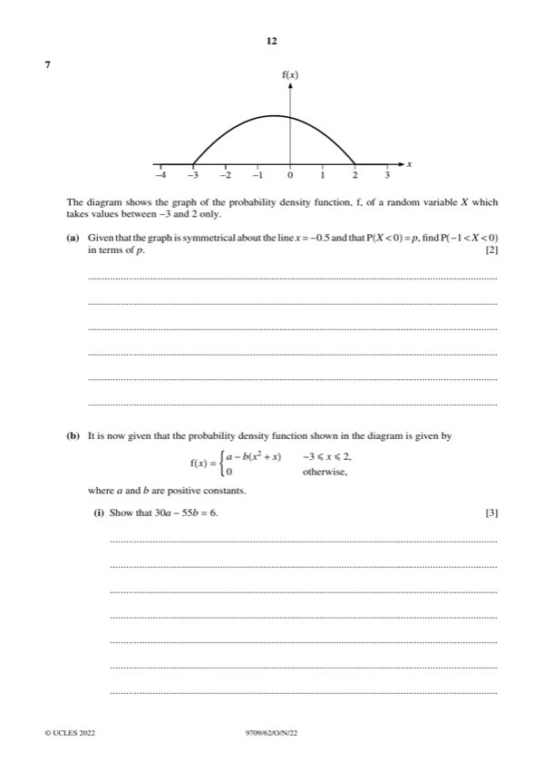

Question 0
Part 0 — solution
- [M1] Standardising with their values
- [M1] can be implied by correct final answer
Mark points
- [M1] Standardising with their values
- [M1] can be implied by correct final answer
Step-by-step solutions based on the mark scheme (not a mark-scheme dump).
Part 0 — solution

Part 1(a) — solution
Part 1 — solution
Part 1 — solution
Part 1 — solution
Part 1 — solution

Part 2 — solution
Part 2 — solution
Part 2 — solution
Part 2 — solution
Part 2 — solution
Part 2 — solution
Part 3 — solution
Part 3(a) — solution
Part 3(b) — solution
Part 3 — solution
Part 3 — solution

Part 4(a) — solution
Part 4(c) — solution

Part 5 — solution
Part 5(a) — solution
Answer: 160 100
Part 5(b) — solution
Part 5 — solution

Part 6(a) — solution
Part 6(b) — solution

Part 7(a) — solution
Part 7(b)(ii) — solution
Part 36 — solution
Answer: 125 125
Part 79 — solution
Answer: 395
Part 80 — solution
Part 80 — solution